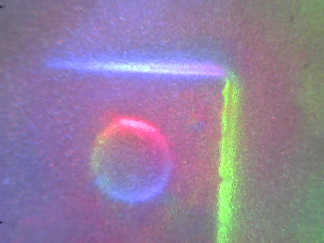
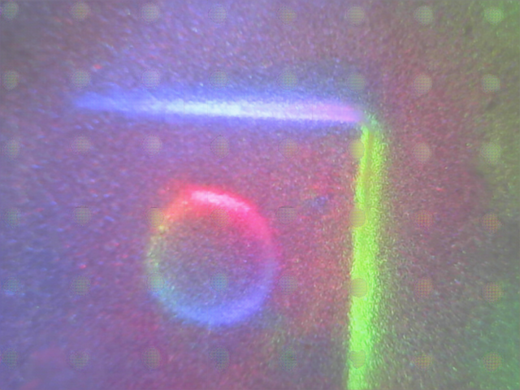
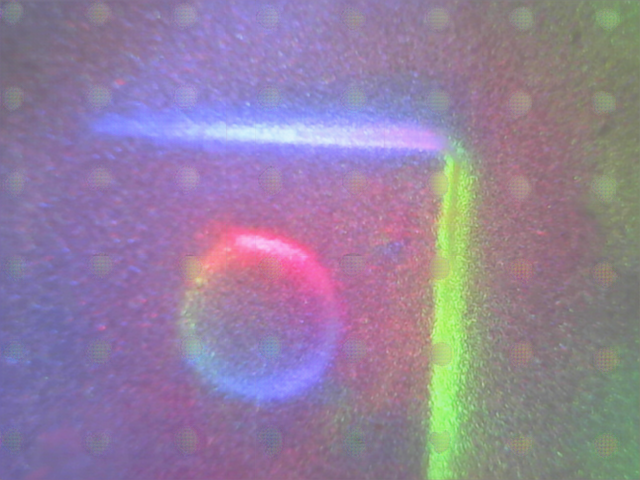

Optical tactile sensors play a pivotal role in robot perception and manipulation tasks. The membrane of these sensors can be painted with markers or remain markerless, enabling them to function in either marker or markerless mode. However, this uni-modal selection means the sensor is only suitable for either manipulation or perception tasks. While markers are vital for manipulation, they can also obstruct the camera, thereby impeding perception. The dilemma of selecting between marker and markerless modes presents a significant obstacle. To address this issue, we propose a novel mode-switchable optical tactile sensing approach that facilitates transitions between the two modes. The marker-to-markerless transition is achieved through a generative model, whereas its inverse transition is realized using a sparsely supervised regressive model. Our approach allows a single-mode optical sensor to operate effectively in both marker and markerless modes without the need for additional hardware, making it well-suited for both perception and manipulation tasks. Extensive experiments validate the effectiveness of our method. Specifically, our approach achieves high recognition accuracy of 97.5%. Meanwhile, our method attains a high success rate of 92.59% in slip detection for manipulation tasks.
 

@article{ou2024marker,
title={Marker or Markerless? Mode-Switchable Optical Tactile Sensing for Diverse Robot Tasks},
author={Ou, Ni and Chen, Zhuo and Luo, Shan},
journal={IEEE Robotics and Automation Letters},
year={2024},
publisher={IEEE}
}